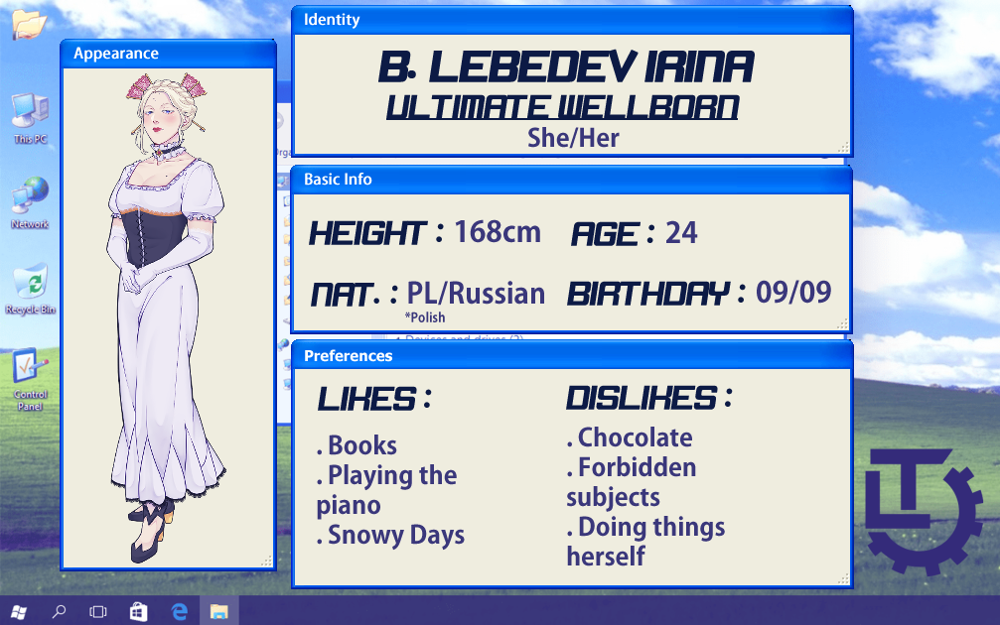

SIRIUS COPPERWOOD
Ultime Espoir, Président élu des 10 conseils
Qui est-il ?
Sirius Copperwood, né le 1er août 1982, est l'actuel Ultime Espoir mondial. Il est président de Kether, l'unique conseil majeur parmi les 10 Conseils , leader dans la prise de décision de la communauté des Ultimes du monde entier. Connu internationalement, il est également réputé comme étant la personnalité qui a apporté la stabilité dans le monde moderne, notamment en mettant les Ultimes au premier plan et en leur octroyant davantages de pouvoirs décisionnels et de visibilité, en accord avec les gouvernements du monde entier.
L'espoir est une notion fondamentale de notre monde, et elle doit être protégée quel qu'en soit le coût.
Quel monde dirige-t-il ?
Suite à de nombreux échecs dans une approche d'un monde pacifique post seconde guerre mondiale, des associations d'Ultimes ont dans un premier temps construit des écoles et des institutions dans l'objectif de protéger les talents de demain. Au bout d'une trentaine d'années, plusieurs écoles du pays ont commencé à construire des conseils privés, capables de prendre en main les affaires de beaucoup de pays derrière les rideaux.
Cette ingérence a causé un grand conflit avec les scènes politiques sur les différents continents, menaçant la paix mondiale. Ainsi, le 20 décembre 2012, à seulement 30 ans, Sirius Copperwood prend la tête incontestée de l'humanité en tant qu'Ultime Espoir, déjouant les prophéties de fin du monde que beaucoup d'Ultimes avaient corrélé avec la situation diplomatique pressante. Il a depuis remis de l'ordre dans un monde où les Ultimes sont les nouveaux guides de l'humanité.
Au moment où vous penserez que vous ne pourrez plus croire en personne, croyez en moi.
Sirius Copperwood supervise ainsi l'ensemble des 10 Conseils, qui se répartissent la carte du monde pour guider les hommes politiques de chaque pays à prendre les décisions de demain. De plus, ces Conseils ont une vue sur tous les Ultimes de ce monde, et chacun fait remonter à Kether, et par conséquent à Copperwood, toutes les nominations et activités.
Carte des 10 Conseils et leur influence sur les différents pays du monde. Kether (1), positionné sur l'île Japonaise d'Hokkaido, est lieu du QG de Copperwood. Gueburah (2) est le conseil qui gère le reste du Japon, un terreau dense pour les Ultimes. Enfin, Tiphareth (3), se charge de l'europe de l'ouest, autre région formatrice de talents.
Ses compétences
Copperwood fait partie des rares individus capable de s'illuster dans le domaine dit de la "chasse aux talents". Cette discipline très rare et demandant un haut niveau d'exigence n'est capable d'être accomplie que par les êtres les plus complets, et est longtemps resté quelque chose de tabou, a cause du fait que dans une discipline donnée, l'attribution d'un titre est limitée au maximum d'un par an. Ainsi, avant d'être Ultime Espoir, Copperwood à cumulé des titres tels que :
- Ultime Stratège (2006)
- Ultime Leader (2010)
- Ultime Escrimeur (2013)
- Et bien d'autres...
Il n'y a pas plus fort que Copperwood.
Force
Intelligence
Charisme
Révolutions autour du soleil
Ultimes cumulés avant son élection
Organisations démantelées
Pages d'admiratrices sur Facebook
Ses protégés
En 2018, Copperwood signe la loi NFT (New Found Talent). Cette loi, entrée immédiatement en vigueur, a davantage poussé la protection des Ultimes en leur prévoyant une place de choix en cas de catastrophe. Dorénavant, d'un simple bouton, Copperwood est en capacité d'envoyer plusieurs escouades de choc capables d'immédiatement cryogéniser les Ultimes et les placer dans un Bunker protégé et autonome.
Voici ci-dessous un échantillon de ses "protégés"...

Note de Sirius :
"Le Tetris est une discipline sous-côtée, mais pourtant représentative de notre société : sans bases solides, tout s'effondre."

Note de Sirius :
"Une femme captivante, vraiment... l'aura de sa famille est telle qu'il n'est étonnant qu'elle aie obtenu son Ultime."
Note de Sirius :
"Lors de la confection d'un objet aussi minutieux qu'une boîte à musique, le moindre faux pas est fatal. Il en va de même pour la politique de ce monde : organisation et régularité sont des mots clés communs à ces deux disciplines."
Note de Sirius :
"Le théâtre nous permet d'exercer un rôle, d'être un autre nous. C'est le moyen de devenir une toute autre personne, et de montrer au monde une autre facette de notre personnalité, jusque lors insoupçonnée. Ainsi, le rapport exercé entre celui qui écrit la pièce et les spectateurs est alors très puissant..."
Note de Sirius :
"B̸̛̭̥͍̖̰͇̾̽͌́͛́̈͐͋̀̋͗̏͊̀ȩ̸̼̺̯̫͖͓͔̟̲̪̲̉̃͐͛ͅ ̴̛̻̱͖͚̝͉̥̠̼͇̂̿̽̊̂̃͗͆̾͋͋͌̊̌͠n̸̡̡̢͚̥̭̜̠̮̰͖̪̗̮͛́̾͒̄̐́̈͐ơ̷̧̼͚̆̆́̒̑͝t̶̢̨̮̹̣̬̠̪̣̑̾̑̏̏̽̆́͘͝͝͠ͅ ̷̲͍̅̓͗̂́̓͋̎͜a̸̡̡̙͙̥͖̯̳̭̒̆͒͆̽̏̄̋̕͝f̸̡̻̘̩̜̳̦͖̞̝̬̬̝̻̞̲́̈̇̓̽̓̊̑̓̈́̓̋͛ȑ̴̻͇͖̯̿̒̓̍͆̊̅a̶͔͕͕̥̞̐̇̽̌͜͝͝i̷̻̠̯̍͐̈́̒̓͠d̷̨͇̰͉̺̝͈̯̤͍̘͍̤̭͂͜.̸̧̢̯̞͍̥̪̩͔̳̟͊̍̈̋"

Note de Sirius :
"Un talent particulier, nouveau, qui va intriguer le monde et son rapport à l'humain. Lors de ses procès, cet Ultime s'attaque à un univers encore inconnu pour la plupart, mais tout phénomène se doit d'être expliqué. Cela est très prometteur..."
Note de Sirius :
"Ah... Sans pardon, la vie est gouvernée par un parcours sans fin de ressentiment et de vengeance. Pour autant, il est compliqué de laisser de côté certains... faux pas de la part de cet Ultime. Il est tout de même toujours celui qui excelle le plus dans son domaine. Il y a une véritable dichotomie entre son talent et ses actes."